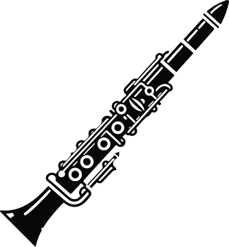

♪ OUR LESSON PLANS ♪
Hear What You Can Learn!
Listen to a sample of modern music covered in our curriculum:
By one of our clarinetist, Nunu Lim.
[He's A Pirate] from Pirate of the Carribean

Why Choose Symphony Steps?
Symphony Steps is designed to guide different musicians through every level, from holding their instrument for the first time to performing confidently during performances. We focus on practical skills, sight-reading, and the rich history of band music, ensuring every student finds their own rhythm.
We pride ourselves on providing a comprehensive, step-by-step lesson for all band instruments, taught by professional instructors with rich experiences. Below are the lesson groups to view the specific instruments and skill area covered.
- 1. Woodwind Lessons 𝄞
-
Instruments Covered:
Clarinet, Oboe, Flute, Saxophone, Piccolo, Bassoon
Key Focus:
- Learn Breathing Control and Breath Support techniques.
- Master Embouchure development.
- Correct Posture and Fingering.
- Basic scales and Articulation.
- 2. Brass Lessons ♫
-
Instruments Covered:
Trumpet, Tuba, Euphonium, French Horn
Key Focus:
- Intense Breathing Control and Breath Support with proper posture.
- Develop Embouchure for optimal air flow.
- Refine Pitch Control and accurate Fingering.
- Basic scales and Articulation techniques.
- 3. Percussion Lessons ♯
-
Instruments Covered:
Bass Drum, Snare Drum, Cymbals, Triangle, Vibraphone
Key Focus:
- Fundamentals of Rythym Reading
- Develop accurate Tempo & Timing.
- Master various Striking Techniques and dynamics